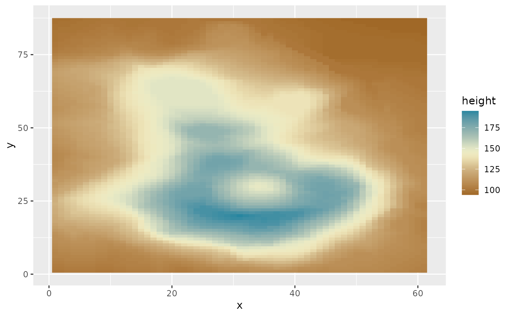
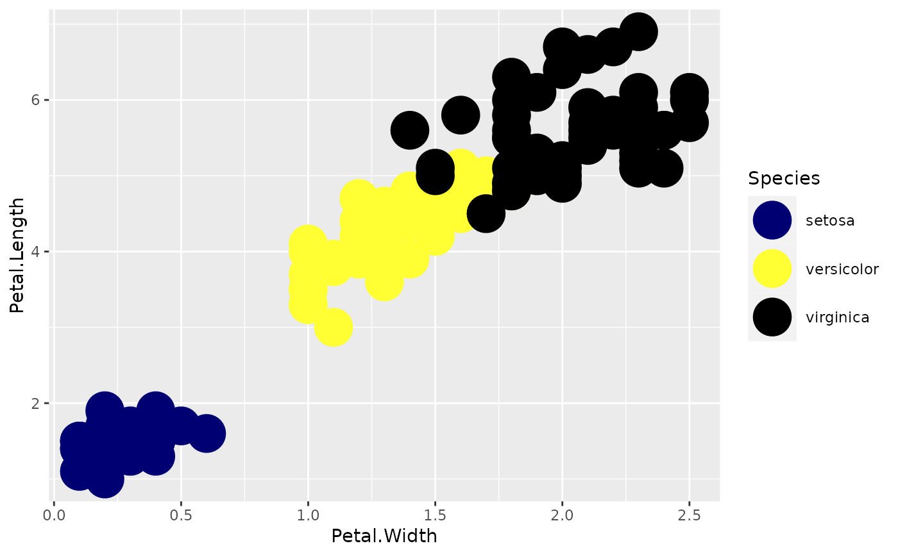

ggplot2-scales.RdThese functions provide the option to use the map palettes along with the `ggplot2` package. It goes without saying that it requires `ggplot2` to work.
scale_colour_map( ..., alpha = NULL, begin = 0, end = 1, direction = 1, palette = "BYR" ) scale_color_map( ..., alpha = NULL, begin = 0, end = 1, direction = 1, palette = "BYR" ) scale_fill_map( ..., alpha = NULL, begin = 0, end = 1, direction = 1, palette = "BYR" ) scale_colour_map_d( ..., alpha = 1, begin = 0, end = 1, direction = 1, palette = "BYR", aesthetics = "colour" ) scale_color_map_d( ..., alpha = 1, begin = 0, end = 1, direction = 1, palette = "BYR", aesthetics = "colour" ) scale_fill_map_d( ..., alpha = 1, begin = 0, end = 1, direction = 1, palette = "BYR", aesthetics = "fill" )
| ... | Arguments to pass on to `ggplot2::scale_colour_gradientn()`, `ggplot2::scale_fill_gradientn()`, `ggplot2::ggplot2::discrete_scale()` |
|---|---|
| alpha | the opacity of the generated colours. |
| begin | The interval within the palette to sample colours from. Defaults to `0` and `1` respectively |
| end | The interval within the palette to sample colours from. Defaults to `0` and `1` respectively |
| direction | Either `1` or `-1`. If `-1` the palette will be reversed |
| palette | The name of the palette to sample from. See [map_palette_names()] for a list of possible names. |
| aesthetics | Character string or vector of character strings listing the name(s) of the aesthetic(s) that this scale works with. This can be useful, for example, to apply colour settings to the colour and fill aesthetics at the same time, via aesthetics = c("colour", "fill"). |
A `ScaleContinuous` or `ScaleDiscrete` object that can be added to a `ggplot` object
volcano <- data.frame( x = rep(seq_len(ncol(volcano)), each = nrow(volcano)), y = rep(seq_len(nrow(volcano)), ncol(volcano)), height = as.vector(volcano) ) ggplot(volcano, aes(x = x, y = y, fill = height)) + geom_raster() + scale_fill_map(palette = 'Earth')  ggplot(iris, aes(x=Petal.Width, y=Petal.Length)) + geom_point(aes(color=Species), size=10) + scale_colour_map_d() 